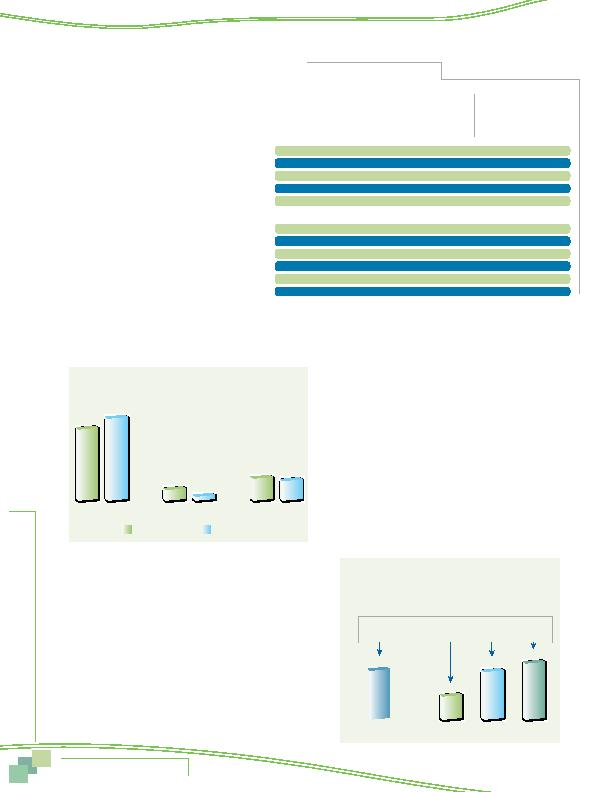

|

on e Comm residents had higher HOV availability than did residents of Maryland or the District of Columbia. At least one-third of respondents in each of the five Virginia jurisdictions said an HOV lane was available to them and in Prince William County, six in ten (60%) respondents reported HOV lanes available. jurisdictions, Frederick County (34%) and Montgomery County (31%). And only one in ten respondents from the District of Columbia reported having access to HOV lanes along their route to work. dents who said they had HOV lanes available. Two jurisdictions, Prince William and Loudoun counties, had considerably higher use of HOV lanes; in these counties, 45% and 35%, respectively, of respon- dents who had access to HOV used the lanes. In other jurisdictions, HOV use varied from 19% to 30% of respondents using the lanes. than half (54%) of the respondents who used the lanes for commuting said availability of the HOV lane influenced their decision to carpool, vanpool, or ride transit for their commute. The influence on carpooling is best illustrated by the drive alone and carpool/vanpool mode shares when HOV lanes are available and when they are not. ing to work, compared with six percent of respondents who did not have access to HOV. Transit use also was higher for respon- dents who said an HOV lane was available. Conversely, the drive alone rate for respondents who had access to HOV was 63%, compared to 71% for respondents who could not use HOV. of travel time that HOV lanes afford. Overall, 54% of HOV users said that availability of the lane influenced their decision to choose an alterna- tive mode for commuting. On average, these users saved 23 minutes one-way in their commute time. Figure 24 shows these results. Core reported that HOV availability influenced their mode choice and they saved an average of 13 minutes one-way. HOV lanes' influence on HOV users who lived in the Middle Ring and Outer Ring was much higher; 53% of Middle Ring respondents and 63% of Outer Ring respon- dents said the HOV lanes influenced their commute mode choice. They also reported much greater time savings in their commute; 22 minutes and 28 minutes one-way, respectively. Frederick County |